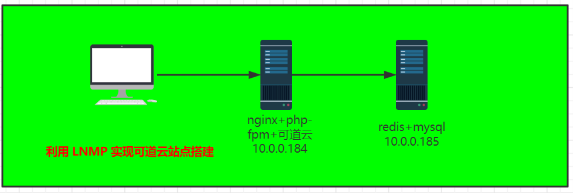
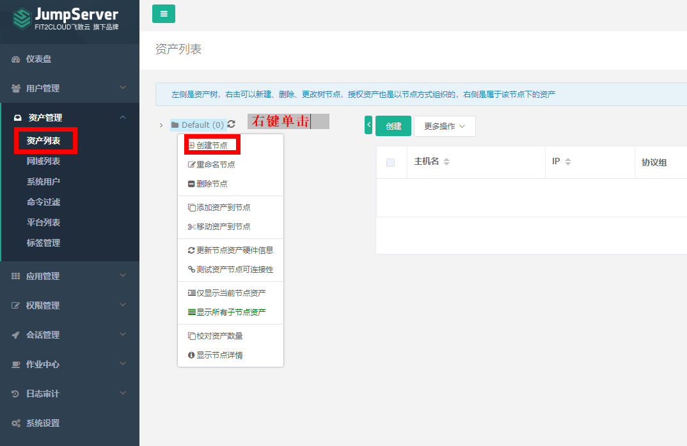
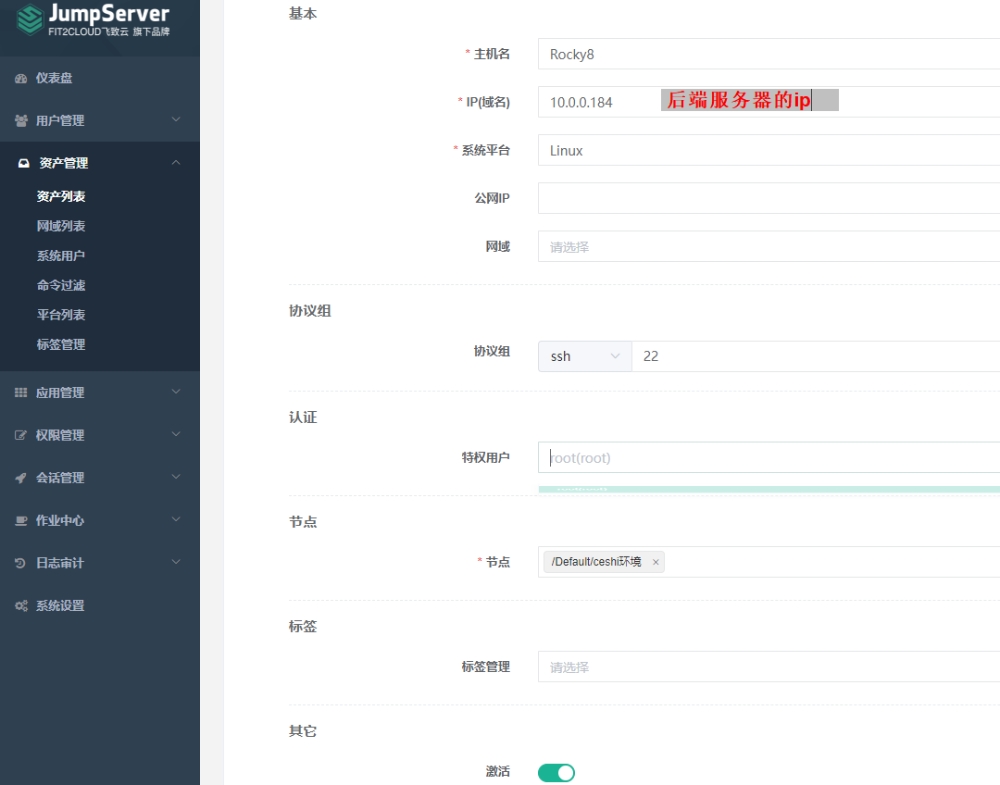
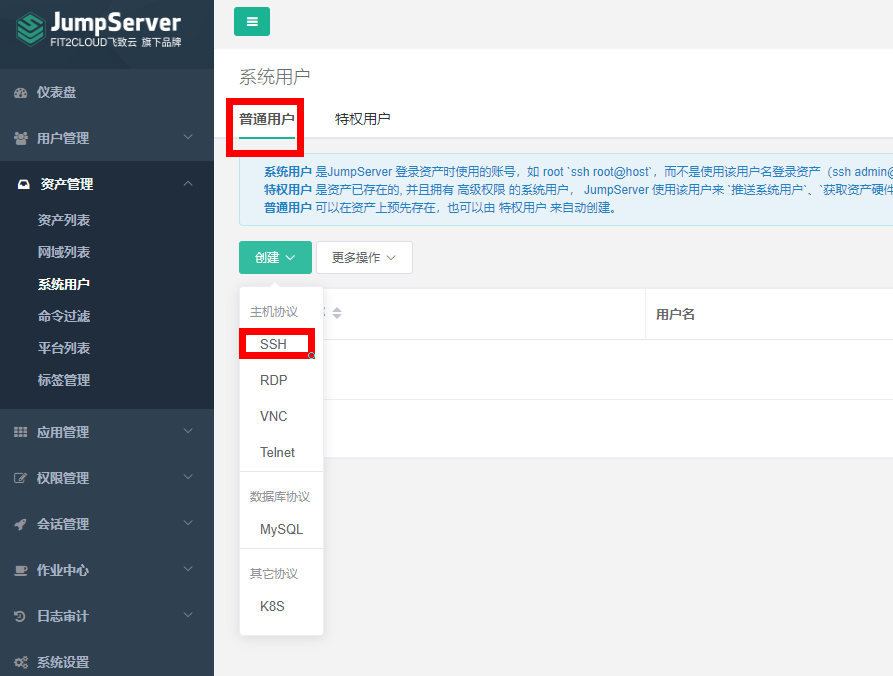
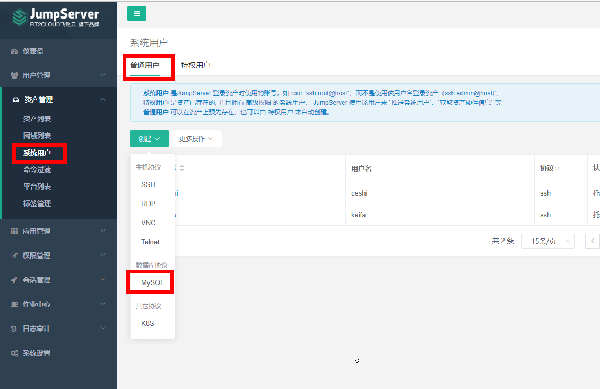
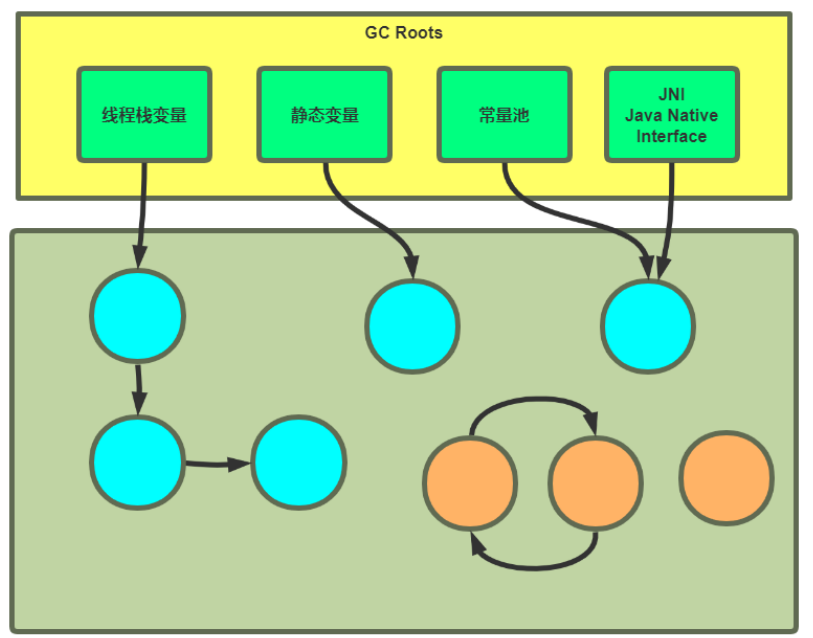
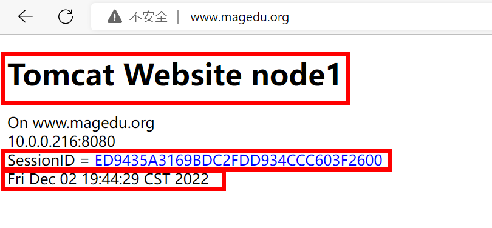

[TOC]
一、nginx实现全栈SSL。要求http rewrite到https协议。 1.1、自签名证书 1 2 3 4 5 6 7 8 9 10 11 12 13 14 15 16 17 18 19 [root@server ~]'s hostname) []:*.magedu.org #网站 Email Address []: #*.magedu.org使用的是泛域名，也可以指定具体网站 [root@server certs]#ls www.magedu.org.crt www.magedu.org.key #查看证书文件 [root@server certs]#openssl x509 -in www.magedu.org.crt -noout -text #或者下载到windows上查看 [root@server certs]#sz www.magedu.org.crt
1.2、https配置 nginx 的https 功能基于模块ngx_http_ssl_module实现，因此如果是编译安装的nginx要使用参数
ngx_http_ssl_module开启ssl功能，但是作为nginx的核心功能，yum安装的nginx默认就是开启的，编
译安装的nginx需要指定编译参数–with-http_ssl_module开启
1 https:// nginx.org/en/ docs/http/ ngx_http_ssl_module.html
配置参数如下：
1 2 3 4 5 6 7 8 9 10 11 12 13 14 15 16 17 18 19 20 21 ssl on | off; builtin [:size]] [shared:name:size];builtin [:size]：
1 2 3 4 5 6 7 8 9 10 11 12 13 14 15 16 17 18 19 20 21 22 23 24 25 26 27 28 29 30 test is successful
1.3、实现HSTS 官方文档:
1 https://www.nginx.com/blog/http-strict-transport-security-hsts-and-nginx/
注意：配置rewrite才能实现http跳转到https
Nginx服务器利用 ngx_http_rewrite_module 模块（属于标准模块，系统默认安装）解析和处理rewrite请求，此功能依靠 PCRE(perl compatible regular expression)，因此编译之前要安装PCRE库，rewrite是nginx服务器的重要功能之一，用于实现URL的重写，URL的重写是非常有用的功能，比如它可以在我们改变网站结构之后，不需要客户端修改原来的书签，也无需其他网站修改我们的链接，就可以设置为访问，另外还可以在一定程度上提高网站的安全性。
rewrite官方文档：
1 https://nginx.org/en/docs/http/ngx_http_rewrite_module.html
1.3.1、利用return实现http跳转到https return适用于server、location、if
1.3.1.1、用两个虚拟主机分开实现跳转 1 2 3 4 5 6 7 8 9 10 11 12 13 14 15 16 17 18 19 20 21 22 [root@server conf.d]return 302 https://www.magedu.org/;test is successful
1.3.1.2、用一个虚拟主机实现跳转 1 2 3 4 5 6 7 8 9 10 11 12 13 14 15 16 17 18 [root@server conf.d]if ($scheme = http) {return 302 https://www.magedu.org/;test is successful
1.3.2、利用rewrite实现http跳转到https rewrite 格式
1 2 3 Syntax: rewrite regex replacement [flag]; if
flag 说明
1 2 3 4 5 6 7 8 9 10 11 12 13 redirect;break ;
1.3.2.1、用两个虚拟主机分开实现跳转 1 2 3 4 5 6 7 8 9 10 11 12 13 14 15 16 17 18 19 20 21 22 [root@server conf.d]$1 redirect;test is successful
1.3.1.2、用一个虚拟主机实现跳转 1 2 3 4 5 6 7 8 9 10 11 12 13 14 15 16 17 18 19 20 21 22 23 24 25 26 27 28 29 [root@server conf.d]if ($scheme = http) {$1 redirect;alias /opt/pc/about;if ($scheme = http) {$host /about redirect;test is successful
二、nginx实现动静分离。
2.1、架构组成 1 2 3 反向代理服务器：10.0.0.184 proxy
2.2、反向代理服务器配置 1 2 3 4 5 6 7 8 9 10 11 12 13 14 15 16 17 18 [root@proxy conf.d]test is successful
2.3、后端服务器配置 1 2 [root@server01 ~]
1 2 3 4 5 6 [root@server02 ~]
三、nginx实现防盗链功能。 防盗链基于客户端携带的referer实现，referer是记录打开一个页面之前记录是从哪个页面跳转过来的标
记信息，如果别人只链接了自己网站图片或某个单独的资源，而不是打开了网站的整个页面，这就是盗
链，referer就是之前的那个网站域名，正常的referer信息有以下几种：
1 2 3 4 5 none：
3.1、实现盗链 在一个web 站点盗链另一个站点的资源信息
1 2 3 4 5 6 7 8 9 10 11 12 13 14 15 16 17 head >"text/html;charset=utf-8" >"http://m.magedu.org/1.jpg" >"GET /1.jpg HTTP/1.1" 304 0 "http://www.magedu.org/" "Mozilla/5.0 (Windows NT 10.0; Win64; x64) AppleWebKit/537.36 (KHTML, like Gecko) Chrome/107.0.0.0 Safari/537.36 Edg/107.0.1418.56"
3.2、实现防盗链 基于访问安全考虑，nginx支持通过ngx_http_referer_module模块,检查访问请求的referer信息是否有
效实现防盗链功能
官方文档:
1 https://nginx.org/en/docs/http/ngx_http_referer_module.html
语法格式：
1 2 3 4 5 6 7 8 9 10 location /images {if ($invalid_referer ) {return 403;
1 2 3 4 5 6 7 8 9 10 11 12 13 14 15 16 17 18 19 20 21 [root@proxy conf.d]if ($invalid_referer ) {return 403 "Forbidden Access" ;test is successful"GET /1.jpg HTTP/1.1" 403 16 "http://www.magedu.org/" "Mozilla/5.0 (Windows NT 10.0; Win64; x64) AppleWebKit/537.36 (KHTML, like Gecko) Chrome/107.0.0.0 Safari/537.36 Edg/107.0.1418.56"
四、解析nginx常见的负载均衡算法。 Nginx 可以基于ngx_http_upstream_module模块提供服务器分组转发、权重分配、状态监测、调度算法等高级功能
官方文档： https://nginx.org/en/docs/http/ngx_http_upstream_module.html
4.1、负载均衡五种算法 ①轮询（默认）
每个请求按时间顺序逐一分配到不同的后端服务，如果后端某台服务器死机，自动剔除故障系统，使用户访问不受影响。
②weight（轮询权值）
weight的值越大分配到的访问概率越高，主要用于后端每台服务器性能不均衡的情况下。或者仅仅为在主从的情况下设置不同的权值，达到合理有效的地利用主机资源。
指定轮询几率，weight和访问比率成正比，用于后端服务器性能不均的情况。
③ip_hash
每个请求按访问IP的哈希结果分配，使来自同一个IP的访客固定访问一台后端服务器，并且可以有效解决动态网页存在的session共享问题。
每个请求按访问ip的hash结果分配，这样每个访客固定访问一个后端服务器，可以解决session的问题。
④fair（第三方）
比 weight、ip_hash更加智能的负载均衡算法，fair算法可以根据页面大小和加载时间长短智能地进行负载均衡，也就是根据后端服务器的响应时间 来分配请求，响应时间短的优先分配。Nginx本身不支持fair，如果需要这种调度算法，则必须安装upstream_fair模块。
按后端服务器的响应时间来分配请求，响应时间短的优先分配。⑤url_hash（第三方）
按访问的URL的哈希结果来分配请求，使每个URL定向到一台后端服务器，可以进一步提高后端缓存服务器的效率。Nginx本身不支持url_hash，如果需要这种调度算法，则必须安装Nginx的hash软件包。
按访问url的hash结果来分配请求，使每个url定向到同一个后端服务器，后端服务器为缓存时比较有效。
1 2 3 4 5 hash KEY [consistent];hash $request_uri consistent; hash $cookie_sessionid
五、基于LNMP完成搭建任意一种应用。 
5.1、准备数据库 1 2 3 4 5 6 7 8 9 10 11 [root@Rocky ~]'10.0.0.%' identified by '123456' ;'10.0.0.%' ;bind 0.0.0.0
5.2、nginx的配置 1 2 3 4 5 6 7 8 9 10 11 12 13 14 15 16 17 18 19 20 21 22 23 24 25 26 27 28 29 30 31 $fastcgi_script_name ;$fastcgi_script_name ;test is successful
5.3、安装和配置php 1 2 3 4 5 6 7 8 9 10 11 12 13 14 15 16 17 18 19 20 21 22 23 24 25 26 27 28 for uploaded files.in log dir .set set
5.4、在DNS里添加解析（以前搭建的DNS） 1 2 3 4 5 6 7 8 9 10 11 12 13 14 15 16 17 18 19 $TTL 1D
5.5、可道云下载 1 2 3 4 5 6 7 8 9 10 11 12 [root@proxy ~]
下一步：
此时发现仍缺少redis的相关组件
5.6、编译安装redis相关组件 1 2 3 4 5 6 7 8 9 10 11 12 13 14 15 16 17 18 19 20 21 22 23 24 25 26 27 28 29 30 31 32 33 34 35 36 37 38 39 40 41 42 43 44 45 46 47 48 [root@proxy ~]cd phprediscommand not foundfor PHP't find PHP headers in /usr/include/php The php-devel package is required for use of this command. [root@proxy redis-5.3.7]#yum -y install php-devel [root@proxy redis-5.3.7]#./configure [root@proxy redis-5.3.7]#make && make install Installing shared extensions: /usr/lib64/php/modules/ #提示模块安装的路径 [root@proxy redis-5.3.7]#ls /usr/lib64/php/modules/ bz2.so dom.so gd.so mbstring.so pdo.so simplexml.so wddx.so calendar.so exif.so gettext.so mysqli.so pdo_sqlite.so sockets.so xmlreader.so ctype.so fileinfo.so iconv.so mysqlnd.so phar.so sqlite3.so xml.so curl.so ftp.so json.so pdo_mysql.so redis.so tokenizer.so xmlwriter.so xsl.so #但此时PHP程序不知道有redis模块，需人为进行添加 [root@proxy redis-5.3.7]#vim /etc/php.d/ 20-bz2.ini 20-fileinfo.ini 20-mbstring.ini 20-sqlite3.ini 20-calendar.ini 20-ftp.ini 20-mysqlnd.ini 20-tokenizer.ini 20-ctype.ini 20-gd.ini 20-pdo.ini 20-xml.ini 20-curl.ini 20-gettext.ini 20-phar.ini 20-xmlwriter.ini 20-dom.ini 20-iconv.ini 20-simplexml.ini 20-xsl.ini 20-exif.ini 20-json.ini 20-sockets.ini 30-mysqli.ini 30-pdo_mysql.ini 30-pdo_sqlite.ini 30-wddx.ini 30-xmlreader.ini [root@proxy redis-5.3.7]#vim /etc/php.d/31-redis.ini extension=redis #添加此行 :wq [root@proxy redis-5.3.7]#systemctl restart php-fpm
六、jumpserver 总结安装部署，添加用户授权，行为审计。 官方文档：
1 https://docs.jumpserver.org/zh/master/install/setup_by_fast/
6.1、安装要求 JumpServer 环境要求:
①硬件配置: 2个CPU核心, 4G 内存, 50G 硬盘（最低）
②操作系统: Linux 发行版 x86_64
③Python = 3.6.x
④MySQL Server ≥ 5.6 或者 Mariadb Server ≥ 5.5.56 数据库编码要求 uft8,新版要求5.7以上
⑤Redis: 新版要求6.0以上
6.2、安装方法 官方提供了多种安装方法
①手动部署: 一步一步实现
②极速部署: 资产数量不多，或者测试体验的用户请使用本脚本快速部署
③容器部署: 基于docker 实现
④分布式部署: 适用大型环境
6.3、基于容器部署 官方文档：
1 2 https://github.com/jumpserver/Dockerfile/tree/master/allinone
6.3.1、环境说明 1 https://github.com/jumpserver/Dockerfile/tree/master/allinone
使用外置 MySQL 数据库和 Redis:
1 2 3 4 5 6 7 8 9 10 11 12 - 外置数据库要求 MySQL 版本大于等于 5.7
基于容器,安装完毕后可以通过以下方式访问
①浏览器访问: http://<容器所在服务器IP>
②默认管理员账户 admin 密码 admin
③SSH 访问: ssh -p 2222 <容器所在服务器IP>
④XShell 等工具请添加 connection 连接, 默认 ssh 端口 2222
容器docker安装
1 2 3 4 5 6 7 8 9 10 11 12 13 14 15 16 17 18 19 20 21 22 23 24 25 26 27 28 29 30 31 32 33 34 35 36 37 38 39 40 41 42 43 44 45 46 47 48 49 50 51 52 53 54 55 56 57 58 59 60 61 62 63 64 65 66 67 68 69 70 71 72 73 74 75 76 77 78 79 80 81 82 83 84 85 86 87 88 89 90 91 92 93 94 95 96 97 98 99 100 101 102 103 104 105 106 107 108 109 110 111 112 113 114 115 [root@docker ~]"20.10.10" "5:${DOCKER_VERSION} ~3-0~`lsb_release -si`-`lsb_release -cs`" "echo -e \\033[1;32m" "echo -e \\033[1;31m" "\033[m" color "echo -en \\033[${RES_COL} G" "echo -en \\033[1;32m" "echo -en \\033[1;31m" "echo -en \\033[1;33m" "echo -en \E[0m" echo -n "$1 " && $MOVE_TO_COL echo -n "[" if [ $2 = "success" -o $2 = "0" ] ;then ${SETCOLOR_SUCCESS} echo -n $" OK " elif [ $2 = "failure" -o $2 = "1" ] ;then ${SETCOLOR_FAILURE} echo -n $"FAILED" else ${SETCOLOR_WARNING} echo -n $"WARNING" fi ${SETCOLOR_NORMAL} echo -n "]" echo install_docker if [ $ID = "centos" -o $ID = "rocky" ];then if [ $VERSION_ID = "7" ];then cat > /etc/yum.repos.d/docker.repo <<EOF [docker] name=docker gpgcheck=0 #baseurl=https://mirrors.aliyun.com/docker-ce/linux/centos/7/x86_64/stable/ baseurl=https://mirrors.tuna.tsinghua.edu.cn/docker-ce/linux/centos/7/x86_64/stable/ EOF else cat > /etc/yum.repos.d/docker.repo <<EOF [docker] name=docker gpgcheck=0 #baseurl=https://mirrors.aliyun.com/docker-ce/linux/centos/8/x86_64/stable/ baseurl=https://mirrors.tuna.tsinghua.edu.cn/docker-ce/linux/centos/8/x86_64/stable/ EOF fi ${COLOR_FAILURE} "Docker有以下版本" ${END} ${COLOR_FAILURE} "5秒后即将安装: docker-" ${DOCKER_VERSION} " 版本....." ${END} ${COLOR_FAILURE} "如果想安装其它Docker版本，请按ctrl+c键退出，修改版本再执行" ${END} sleep 5$DOCKER_VERSION docker-ce-cli-$DOCKER_VERSION \"Base,Extras的yum源失败,请检查yum源配置" 1;exit ; }else $COLOR "Docker已安装，退出" 1 && exit "更新包索引失败" 1 ; exit 1; } "安装相关包失败" 1 ; exit 2; } "deb [arch=amd64] https://mirrors.tuna.tsinghua.edu.cn/docker-ce/linux/ubuntu $(lsb_release -cs) stable" ${COLOR_FAILURE} "Docker有以下版本" ${END} ${COLOR_FAILURE} "5秒后即将安装: docker-" ${UBUNTU_DOCKER_VERSION} " 版本....." ${END} ${COLOR_FAILURE} "如果想安装其它Docker版本，请按ctrl+c键退出，修改版本再执行" ${END} sleep 5${UBUNTU_DOCKER_VERSION} docker-ce-cli=${UBUNTU_DOCKER_VERSION} fi if [ $? -eq 0 ];then "安装软件包成功" 0else "安装软件包失败，请检查网络配置" 1exit fi config_docker mkdir -p /etc/dockertee /etc/docker/daemon.json <<-'EOF' "registry-mirrors" : ["https://si7y70hh.mirror.aliyuncs.com" ],"insecure-registries" :["harbor.magedu.org:80" ]enable docker"Docker 安装成功" 0 || color "Docker 安装失败" 1set_alias echo 'alias rmi="docker images -qa|xargs docker rmi -f"' >> ~/.bashrcecho 'alias rmc="docker ps -qa|xargs docker rm -f"' >> ~/.bashrc
6.3.2、安装MySQL服务 官方说明：
1 https://docs.jumpserver.org/zh/master/install/prod/distributed_03/
MYSQL要求
1 2 3 4 create database jumpserver default charset 'utf8';
6.3.2.1、在宿主机准备MySQL配置文件 1 2 3 4 5 6 7 8 9 10 11 12 13 14 15 16 17 18 19 20 21 22 23 24 25 26 27 28 29
6.3.2.2、启动MySQL容器 将上面宿主机的设置好的配置文件挂载至MySQL容器
1 2 3 4 5 6 7 8 [root@docker ~]
6.3.2.3、查看验证mysql 1 2 3 4 5 6 7 8 9 10 11 12 13 14 15 16 17 18 19 20 21 22 23 24 25 26 [root@docker ~]command line interface can be insecure.id is 2
6.3.3、安装Redis服务 官方说明：
1 https://docs.jumpserver.org/zh/master/install/prod/distributed_04/
新版要求：
1 外置 Redis 要求 Redis 版本大于等于 6.0
6.3.3.1、启动redis 6.3.3.2、验证Redis连接 1 2 3 4 5 6 [root@client ~]
6.3.4、部署JumpServer 6.3.4.1、生成key和token 官方说明
1 2 https://github.com/jumpserver/Dockerfile/tree/master/allinone
需要先生成key和token
1 2 3 4 5 6 7 8 9 10 11 12 13 14 15 16 17 18 19 20 [root@docker ~]if [ ! "$SECRET_KEY " ];then SECRET_KEY=`cat /dev/urandom | tr -dc A-Za-z0-9 | head -c 50`;echo "SECRET_KEY=$SECRET_KEY " >> ~/.bashrc; echo SECRET_KEY=$SECRET_KEY ;else echo SECRET_KEY=$SECRET_KEY ;fi if [ ! "$BOOTSTRAP_TOKEN " ];then BOOTSTRAP_TOKEN=`cat /dev/urandom | tr -dc A-Za-z0-9 | head -c 16`;echo "BOOTSTRAP_TOKEN=$BOOTSTRAP_TOKEN " >> ~/.bashrc;echo BOOTSTRAP_TOKEN=$BOOTSTRAP_TOKEN ;else echo BOOTSTRAP_TOKEN=$BOOTSTRAP_TOKEN ;fi
6.3.4.2、运行容器 1 2 3 4 5 6 7 8 9 10 11 12 13 14 15 16 17 18 19 20 21 22 23 24 25 26 27 28 29 30 31 32 33 34 35 36 37 -----------------------------------------------------------------------------------bind : address already in use.'' \true \"/jms_all" is already in use by container "10aecc51ec5bfd5a8121480a49bfdba40c6218868f1ac2f4e76ce685e3ef4412" . You have to remove (or rename) that container to be able to reuse that name."./entrypoint.sh" 17 minutes ago Created jms_all"docker-entrypoint.s…" About an hour ago Up About an hour 0.0.0.0:6379->6379/tcp, :::6379->6379/tcp redis"docker-entrypoint.s…" About an hour ago Up About an hour 0.0.0.0:3306->3306/tcp, :::3306->3306/tcp, 33060/tcp mysql
6.3.4.3、验证是否成功 1 2 3 4 5 6 7 8 9 10 11 [root@docker ~]id : UserGroupStarting supervisor: supervisord.exec -it jms_all /bin/bash
注意：首次登录的初始账号和密码均为admin
登录进去后，会立刻让更改密码
更改密码后重新登录
6.4、用户授权和行为审计 6.4.1、创建组 创建开发组和测试组
6.4.2、创建用户并加入组 创建用户：xiaoming并加入开发组
创建用户：xiaohong并加入测试组
登录账户：xiaoming，首次登录需要完善个人信息
6.4.3、创建系统审计员 创建系统审计员：mage
登录账户：mage，左侧管理向与普通用户不同
6.4.4、创建管理用户 管理用户是jumpServer用来管理后端服务器或其它资产的管理员用户,此用户必须对后端服务器有管理权限
管理用户特点:
①通常是后端服务器的root或者是具备root权限的超级用户
②用于推送或者是创建系统用户
③用于获取被管理的硬件资产信息
6.4.5、创建资产并实现资产分类 创建可以被jumpServer用户访问的后端服务器和其它资产,比如:路由器,交换机等


开发环境和测试环境各加入一台服务器
6.4.6、创建系统用户 系统用户是分配给JumpServer用户,用来让JumpServer用户在连接后端服务器和其它资产,一般不会给管理权限
生产环境中,一般都会利用自动化运维工具提前在后端服务器创建好系统用户,在所有后端服务器统一用户ID信息,而非在jumpserver中创建

创建ceshi和kaifa用户
6.4.7、关联使用系统用户的资产 将前面创建的系统用户推送到后端服务器并自动创建
在系统用户中添加使用此用户的资产
6.4.8、创建授权规则 通过授权规则, 为JumpServer用户分配可以访问的资产及使用的系统用户
开发组授权
测试组授权
6.4.9、测试登录访问后端服务器
开发组xiaoming登录后端
6.4.9、ssh连接jumpserver JumpServer 还支持用户通过ssh连接其2222/tcp端口进行访问
1 2 3 4 5 6 7 8 9 10 11 12 13 [root@Rocky ~]
6.4.10、数据库授权 6.4.10.1、在后端服务器创建数据库 1 2 3 4 5 6 7 [root@mysql ~]'10.0.0.%' identified by '123456' ;'10.0.0.%' ;
6.4.10.2、创建数据库应用 应用管理–数据库–创建
6.4.10.3、创建数据库的系统用户 创建针对数据库的专用系统用户
注意:协议选择mysql

6.4.10.4、创建数据库授权规则 权限管理–应用授权
数据库授权给测试组使用
6.4.10.5、测试数据库连接
6.4.11、会话管理 会话管理-命令记录、历史会话里面可以看到用户操作过并且已经退出的录像记录
在线会话
历史会话
七、JVM垃圾回收原理，JVM调优。 对于垃圾回收,需要解决三个问题
①哪些是垃圾要回收
②怎么回收垃圾
③什么时候回收垃圾
7.1、确定垃圾的方法 ①引用计数: 每一个堆内对象上都与一个私有引用计数器，记录着被引用的次数，引用计数清零，该对象所占用堆内存就可以被回收。循环引用的对象都无法将引用计数归零，就无法清除。Python中即使用此种方式
②根搜索(可达)算法 Root Searching

7.2、垃圾回收基本算法 方法一：标记-清除 Mark-Sweep
分垃圾标记阶段和内存释放两个阶段。
①标记阶段，找到所有可访问对象打个标记。清理阶段，遍历整个堆
②对未标记对象(即不再使用的对象)逐一进行清理。
特点：
优点：算法简单
缺点：标记-清除最大的问题会造成内存碎片 ,但是不浪费空间,效率较高(如果对象较多时,逐一删除效率也会受到影响)
方法二：标记-压缩 (压实)Mark-Compact
分垃圾标记阶段和内存整理两个阶段。
①标记阶段，找到所有可访问对象打个标记。
②内存清理阶段时，整理时将对象向内存一端移动，整理后存活对象连续的集中在内存一端。
特点：
标记-压缩算法好处是整理后内存空间连续分配，有大段的连续内存可分配，没有内存碎片。
缺点是内存整理过程有消耗,效率相对低下
方法三：复制Copying
先将可用内存分为大小相同两块区域A和B，每次只用其中一块，比如A。当A用完后，则将A中存活的对象复制到B。复制到B的时候连续的使用内存，最后将A一次性清除干净。
特点 ：
好处是没有碎片，复制过程中保证对象使用连续空间,且一次性清除所有垃圾,所以即使对象很多，收回效率也很高
缺点是比较浪费内存，只能使用原来一半内存，因为内存对半划分了，复制过程毕竟也是有代价。
总结：
没有最好的算法,在不同场景选择最合适的算法
①效率: 复制算法>标记清除算法> 标记压缩算法
②内存整齐度: 复制算法=标记压缩算法> 标记清除算法
③内存利用率: 标记压缩算法=标记清除算法>复制算法
7.3、垃圾回收的原理 分代堆内存GC策略： 对不同数据进行区分管理，不同分区对数据实施不同回收策略，分而治之。
堆内存分代 将heap内存空间分为三个不同类别: 年轻代、老年代、持久代
①年轻代Young ：Young Generation
——伊甸园区eden : 只有一个,刚刚创建的对象
——幸存(存活)区Servivor Space： 有2个幸存区，一个是from区，一个是to区。大小相等、地位相同、可互换
——from 指的是本次复制数据的源区
——to 指的是本次复制数据的目标区
②老年代Tenured： Old Generation, 长时间存活的对象
**默认空间大小比例:**默认JVM试图分配最大内存的总内存的1/4,初始化默认总内存为总内存的1/64,年青代中heap的1/3，老年代占2/3
③永久代： JDK1.7之前使用, 即Method Area方法区,保存JVM自身的类和方法,存储JAVA运行时的环境信息,JDK1.8后 改名为 MetaSpace,此空间不存在垃圾回收,关闭JVM会释放此区域内存,此空间物理上不属于heap内存,但逻辑上存在于heap内存
——永久代必须指定大小限制,字符串常量JDK1.7存放在永久代,1.8后存放在heap中
——MetaSpace 可以设置,也可不设置,无上限
规律: 一般情况99%的对象都是临时对象
7.3.1、年轻代回收Minor GC ①起始时，所有新建对象(特大对象直接进入老年代)都出生在eden，当eden满了，启动GC 。这个称
为Young GC 或者 Minor GC 。
②先标记 eden存活对象，然后将存活对象复制 到s0（假设本次是s0，也可以是s1，它们可以调
换），eden剩余所有空间都清空。GC完成 。
③继续新建对象，当eden再次满了，启动GC 。
④先同时标记 eden和s0中存活对象，然后将存活对象复制 到s1。将eden和s0清空,此次GC完成
⑤继续新建对象，当eden满了，启动GC 。
⑥ 先标记 eden和s1中存活对象，然后将存活对象复制 到s0。将eden和s1清空,此次GC完成
以后就重复上面的步骤。
通常场景下,大多数对象都不会存活很久，而且创建活动非常多，新生代就需要频繁垃圾回收。
但是，如果一个对象一直存活，它最后就在from、to来回复制，如果from区中对象复制次数达到阈值
(默认15次,CMS为6次,可通过java的选项 -XX:MaxTenuringThreshold=N 指定)，就直接复制到老年
代。
7.3.2、老年代回收Major GC 进入老年代的数据较少，所以老年代区被占满的速度较慢，所以垃圾回收也不频繁。
如果老年代也满了,会触发老年代GC,称为Old GC 或者 Major GC 。
由于老年代对象一般来说存活次数较长，所以较常采用标记-压缩 算法。
当老年代满时,会触发 Full GC ,即对所有”代”的内存进行垃圾回收
Minor GC比较频繁，Major GC较少。但一般Major GC时，由于老年代对象也可以引用新生代对象，所
以先进行一次Minor GC，然后在Major GC会提高效率。可以认为回收老年代的时候完成了一次Full GC。
所以可以认为 MajorGC = FullGC
7.4、JVM参数的选项分类 Java 命令行参考文档: https://docs.oracle.com/javase/8/docs/technotes/tools/unix/java.html
选项分类
-选项名称 此为标准选项,所有HotSpot都支持
-X选项名称 此为稳定的非标准选项
-XX:选项名称 非标准的不稳定选项，下一个版本可能会取消
7.5、jvm调优 注意: 在不同领域和场景对JVM需要不同的调整策略
减少 STW 时长，串行变并行
减少 GC 次数，要分配合适的内存大小
一般情况下，大概可以使用以下原则：
客户端或较小程序，内存使用量不大，可以使用串行回收
对于服务端大型计算，可以使用并行回收
大型WEB应用，用户端不愿意等待，尽量少的STW，可以使用并发回收
①调整-Xms值和-Xmx值
将-Xms值和-Xmx值设置为一样大小，避免内存不够用时来回申请
-Xms：设置应用程序初始 使用的堆内存大小（年轻代+老年代）
-Xmx：设置应用程序能获得的最大 堆内存；早期JVM不建议超过32G，内存管理效率下降
1 2 3 4 5 6 7 8 9 10 11 12
1 2 3 4 5 6 7 8 9 10 11 12 13 14 "-Xms4g -Xmx4g" "-server -Xms4g -Xmx4g -XX:NewSize= -XX:MaxNewSize= "
更改前heap大小
更改后heap大小
②指定垃圾回收器的种类
1 2 3 4 5 6 7 8 9 10 11 12 13 14 15 16 17 18 19 20 "-Xms4g -Xmx4g -XX:+UseConcMarkSweepGC -XX:+UseCMSCompactAtFullCollection -XX:CMSFullGCsBeforeCompaction=5"
③线程池调整
常用属性：
①connectionTimeout ：连接超时时长,单位ms
②maxThreads：最大线程数，默认200
③minSpareThreads：最小空闲线程数
④maxSpareThreads：最大空闲线程数
⑤acceptCount：当启动线程满了之后，等待队列的最大长度，默认100
⑥URIEncoding：URI 地址编码格式，建议使用 UTF-8
⑦enableLookups：是否启用客户端主机名的DNS反向解析，缺省禁用，建议禁用，就使用客户端IP就行
⑧compression：是否启用传输压缩机制，建议 “on”，CPU和流量的平衡
—compressionMinSize：启用压缩传输的数据流最小值，单位是字节
—compressableMimeType：定义启用压缩功能的MIME类型text/html, text/xml, text/css,text/javascript
1 2 3 4 5 6 7 8 "8080" protocol="HTTP/1.1" "20000" "8443" maxThreads="2000" />
八、tomcat实现java应用发布。 8.1、部署基于JAVA的博客系统JPress 官方网站：http://www.jpress.io/
1 2 3 4 5 6 7 8 9 10 11 12 13 14 15 16 17 [root@Rocky ~]
1 2 3 4 5 6 'localhost' identified by '123456' ; 'localhost' ;
此后输入10.0.0.186:8080/blog即可登录网页，但不是网站后端
此后输入10.0.0.186:8080/blog/用户名即可登录网站后端
九、实现tomcat session粘性，并验证过程。
9.1、Tomcat配置 1 2 3 4 5 6 7 8 9 10 11 12 13 14 15 16 17 18 19 20 21 22 23 24 25 26 27 28 29 30 31 32 33 34 35 36 37 38 39 40 41 42 43 44 45 46 47 48 49 50 51 52 53 54 55 56 57 58 59 60 61 [root@tomcat1 ~]"www.magedu.org" appBase="/data/tomcat/node1/" "true" autoDeploy="true" >"org.apache.catalina.valves.AccessLogValve" directory="logs" "node1_access_log" suffix=".txt" "%h %l %u %t "%r" %s %b" />"java.util.*" %>"en" >head >"UTF-8" >test </title>":" + request.getLocalPort() %></div>"color:blue" ><%=session.getId() %></span></div>"www.magedu.org" appBase="/data/tomcat/node2/" "true" autoDeploy="true" >"org.apache.catalina.valves.AccessLogValve" directory="logs" "node2_access_log" suffix=".txt" "%h %l %u %t "%r" %s %b" />"java.util.*" %>"en" >head >"UTF-8" >test </title>":" + request.getLocalPort() %></div>"color:blue" ><%=session.getId() %></span></div>
9.2、DNS解析 1 2 3 4 5 6 7 8 9 10 11 [root@DNS ~]$TTL 1D
9.3、nginx的配置（反向代理与负载均衡） 1 2 3 4 5 6 7 8 9 10 11 12 13 14 15 16 17 18 19 20 21 [root@nginx ~]$http_host ;
9.3.1、保持session不发生变化 1 2 3 4 5 6 7 8 [root@nginx ~]hash $cookie_JSESSIONID ;
十、实现tomcat会话复制集群。 Tomcat 官方实现了 Session 的复制集群,将每个Tomcat的Session进行相互的复制同步,从而保证所有Tomcat都有相同的Session信息.
10.1、配置说明
官方文档：
1 https://tomcat.apache.org/tomcat-10.0-doc/cluster-howto.html https://tomcat.apache.org/tomcat-9.0-doc/cluster-howto.html https://tomcat.apache.org/tomcat-8.5-doc/cluster-howto.html
说明
1 2 3 4 5 6 7 8 9 10 11 12 13 14 15 16 17 18 19 20 21 22 23 24 25 26 27 28 29 30 31 32 33 34 35 36 37 <Cluster className="org.apache.catalina.ha.tcp.SimpleTcpCluster" "8" >"org.apache.catalina.ha.session.DeltaManager" "false" "true" />"org.apache.catalina.tribes.group.GroupChannel" >"org.apache.catalina.tribes.membership.McastService" "228.0.0.4" "45564" "500" "3000" /> "org.apache.catalina.tribes.transport.nio.NioReceiver" "auto" "4000" "100" "5000" "6" />"org.apache.catalina.tribes.transport.ReplicationTransmitter" >"org.apache.catalina.tribes.transport.nio.PooledParallelSender" /> </Sender>"org.apache.catalina.tribes.group.interceptors.TcpFailureDetector" />"org.apache.catalina.tribes.group.interceptors.MessageDispatchIntercep tor" />"org.apache.catalina.ha.tcp.ReplicationValve" filter="" />"org.apache.catalina.ha.session.JvmRouteBinderValve" />"org.apache.catalina.ha.deploy.FarmWarDeployer" "/tmp/war-temp/" "/tmp/war-deploy/" "/tmp/war-listen/" "false" />"org.apache.catalina.ha.session.ClusterSessionListener" />
10.1、Tomcat配置 1 2 3 4 5 6 7 8 9 10 11 12 13 14 15 16 17 18 19 20 21 22 23 24 25 26 27 28 29 30 31 32 33 34 35 36 37 38 39 40 41 42 43 44 45 46 47 48 49 50 51 52 53 54 55 56 57 58 59 60 61 62 63 64 65 66 67 68 69 70 71 72 73 74 75 76 77 78 79 80 81 82 83 84 85 86 87 88 89 90 91 92 93 94 95 96 97 98 99 100 101 102 103 104 105 106 107 108 109 110 111 112 113 114 115 116 117 118 119 120 121 122 123 124 125 126 127 128 129 130 131 132 133 134 135 136 137 138 139 140 141 142 143 144 145 146 147 148 149 150 151 [root@tomcat1 ~]"www.magedu.org" appBase="/data/tomcat/node1/" "true" autoDeploy="true" >"org.apache.catalina.valves.AccessLogValve" directory="logs" "node1_access_log" suffix=".txt" "%h %l %u %t "%r" %s %b" />"org.apache.catalina.ha.tcp.SimpleTcpCluster" "8" >"org.apache.catalina.ha.session.DeltaManager" "false" "true" />"org.apache.catalina.tribes.group.GroupChannel" >"org.apache.catalina.tribes.membership.McastService" "228.0.0.4" "45564" "500" "3000" />"org.apache.catalina.tribes.transport.nio.NioReceiver" "10.0.0.216" "4000" "100" "5000" "6" />"org.apache.catalina.tribes.transport.ReplicationTransmitter" >"org.apache.catalina.tribes.transport.nio.PooledParallelSender" />"org.apache.catalina.tribes.group.interceptors.TcpFailureDetector" />"org.apache.catalina.tribes.group.interceptors.MessageDispatchInterceptor" />"org.apache.catalina.ha.tcp.ReplicationValve" "" />"org.apache.catalina.ha.session.JvmRouteBinderValve" />"org.apache.catalina.ha.deploy.FarmWarDeployer" "/tmp/war-temp/" "/tmp/war-deploy/" "/tmp/war-listen/" "false" />"org.apache.catalina.ha.session.ClusterSessionListener" />"java.util.*" %>"en" >head >"UTF-8" >test </title>":" + request.getLocalPort() %></div>"color:blue" ><%=session.getId() %></span></div>"www.magedu.org" appBase="/data/tomcat/node2/" "true" autoDeploy="true" >"org.apache.catalina.valves.AccessLogValve" directory="logs" "node2_access_log" suffix=".txt" "%h %l %u %t "%r" %s %b" />"org.apache.catalina.ha.tcp.SimpleTcpCluster" "8" >"org.apache.catalina.ha.session.DeltaManager" "false" "true" />"org.apache.catalina.tribes.group.GroupChannel" >"org.apache.catalina.tribes.membership.McastService" "228.0.0.4" "45564" "500" "3000" />"org.apache.catalina.tribes.transport.nio.NioReceiver" "10.0.0.216" "4000" "100" "5000" "6" />"org.apache.catalina.tribes.transport.ReplicationTransmitter" >"org.apache.catalina.tribes.transport.nio.PooledParallelSender" />"org.apache.catalina.tribes.group.interceptors.TcpFailureDetector" />"org.apache.catalina.tribes.group.interceptors.MessageDispatchInterceptor" />"org.apache.catalina.ha.tcp.ReplicationValve" "" />"org.apache.catalina.ha.session.JvmRouteBinderValve" />"org.apache.catalina.ha.deploy.FarmWarDeployer" "/tmp/war-temp/" "/tmp/war-deploy/" "/tmp/war-listen/" "false" />"org.apache.catalina.ha.session.ClusterSessionListener" />"java.util.*" %>"en" >head >"UTF-8" >test </title>":" + request.getLocalPort() %></div>"color:blue" ><%=session.getId() %></span></div>
10.2、DNS解析 和上面9.2、DNS解析相同
10.3、nginx的配置（反向代理与负载均衡） 和上面9.3、nginx的配置（反向代理与负载均衡）相同
